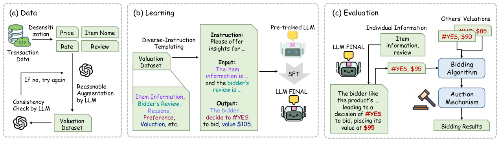

LaMP-Val: Large Language Models Empower Personalized Valuation in Auction (大语言模型赋能的拍卖个性化估值)
- 会议/期刊: ACL/EMNLP 2025
- 作者与机构: Jie Sun, Tianyu Zhang, Houcheng Jiang, Kexin Huang, An Zhang, Jiancan Wu, Xiang Wang 等（中国科学技术大学、上海创新研究院、华东师范大学、西安交通大学等）
- 推荐链路定位: 端到端生成式（估值生成 → 竞价 → 拍卖闭环）
- 研究方向: 大语言模型推荐 (LLM4Rec) / 强化学习与动态探索推荐
- 论文原文: https://arxiv.org/abs/2410.15817v2
- 开源代码: https://github.com/sunjie279/LaMP-Val
TL;DR (1分钟核心速览)
现有拍卖研究几乎只优化「价值→出价」的竞价算法，却把「用户需求→价值」的估值环节当作给定输入。本文的理论与仿真表明：估值噪声标准差 0.01 即造成 9.6% 效用损失，σ=0.1 时效用直接转负（-251.9%）。LaMP-Val 用 LLM 从商品描述与用户评论中抽取个性化语义偏好，构建 23,065 条带推理链的估值数据集，以 30 套多样化指令做 SFT，并把 LLM 估值接入 Individual Pacing + Vickrey 拍卖闭环。在 Epinions 派生的 7,515 条测试样本、900 件商品、10 万预算设定下，PU 达 5,872（GPT-4 仅 896），MAE 从 2,203 降至 536。
Background & Motivation (背景与核心矛盾)
- 主流范式: 拍卖侧工作（Balseiro 的 pacing、Golrezaei 的稳健机制等）聚焦竞价策略与机制设计，把每个竞标者对商品的估值 \(v_m\) 视为外生给定；估值侧工作则依赖专家手工特征（活动画像、保留价策略）训练估值模型。
- 前人局限: 其一，专家特征空间封闭——用户评论里出现"retro 复古风"这类训练特征未覆盖的语义时，模型无法表征，估值系统性失真（图 1(b)）；其二，传统指标 utility/value 只衡量金钱收益，默认所有竞标者对商品同质偏好，无法反映"买到自己真正想要的商品"这一主观满足。
- 核心洞察 (Key Insight): 估值误差会被竞价算法放大——仿真中 1% 的估值噪声即吞噬近 10% 效用，说明估值精度而非竞价策略才是当前效用瓶颈；而 LLM 恰好擅长解析模糊、开放的自然语言偏好描述。
- 本文切入点: 把估值从"特征回归"重构为"语义推理生成"任务，用本地可部署的开源 LLM 同时输出偏好标签 \(\hat{f}_m\)与估值\(\hat{v}_m\)，并设计偏好感知的闭环评估指标。
Method (核心方法设计)
1. 整体框架 (Overall Architecture)
LaMP-Val 由数据、学习、评估三段构成闭环。数据段以 Epinions 交易记录为源，脱敏后仅保留商品名、成交价、评论与评分，用 GPT-4 补全"用户为何这样估值"的推理链，并经一致性校验（不合格则重试）得到估值数据集；学习段将商品信息与评论填入 30 套语义等价但措辞不同的指令模板，对 Mistral-7B-Instruct 做 SFT 得到 \(\text{LLM}_{\text{FINAL}}\)；评估段让模型对每件商品输出\((\hat{f}_m,\hat{v}_m)\)，交由 Individual Pacing 算法在预算约束下算出出价\(b_m\)，再由 Vickrey 机制与真实竞争出价\(b_m^o\) 结算，最终用 PU/PV 与加权 F1/MAE/RMSLE 双轨评估。
flowchart TD
A["Epinions 交易记录（脱敏）"] --> B["GPT-4 补全偏好/估值/推理链 + 一致性校验"]
B --> C["23,065 条估值数据集"]
C --> D["30 套多样化指令模板 → SFT Mistral-7B"]
D --> E["输出 (偏好 f̂, 估值 v̂)"]
E --> F["Individual Pacing 出价 b_m"]
F --> G["Vickrey 拍卖结算 → PU / PV"]
2. 关键设计拆解 (Key Designs)
-
带推理链与引导符的估值数据构造：痛点是原始交易数据存在"价值-价格悖论"（成交价≠感知价值）、评分偏斜与决策理由缺失。作者先过滤购买记录少于 15 条的商品以保证市场充分参与，再把最高/最低评分二值化为"喜欢/不喜欢"标签以消除评分尺度偏差，最后让强推理模型生成偏好与估值的理由。输出端强制加引导符——偏好前缀
#、估值前缀$，使模型输出可被稳定解析为结构化字段，避免自由文本解析失败。 -
多样化指令 SFT：单一措辞的指令会让模型过拟合模板表面形式而非任务本质。作者用 LLM 生成 30 套语义相同、表述各异的指令并人工校验，随机分配给每条样本，使模型学到"从评论推断偏好与价值"的不变映射。训练目标为标准自回归负对数似然：
其中 \(x\)为指令+商品信息+评论，\(y\)为"理由 + #YES/#NO + $估值"的完整序列。该设计无需负采样，推理时零样本单次前向即可同时产出偏好与估值。
- 偏好感知闭环指标 PU/PV：传统 utility 只对"赢得且价差为正"求和，无法区分赢的是不是用户想要的。PU 引入偏好与获胜的联合指示：
双重过滤保证只统计"既想要又拍到"的商品，PU 反映真实经济所得，PV 反映理想满足上限。图 5 的案例直观说明：某竞标者 utility=6.89 却 PU=PV=0（拍到的全是非偏好品），而另一策略 utility=-0.06 但 PU=19.94、PV=289.94——传统指标与用户满意度在此完全背离。
Experimental Setup & Evaluation Protocol (实验设置与评估协议)
- 数据集与预处理: 源数据 Epinions（508k 条评分），经脱敏、≥15 条购买记录过滤、极端评分二值化、GPT-4 推理链增强与一致性校验后，得到 923 类商品、23,065 条实例。
| 数据集 | #Items(类) | #Instances | 划分方式 | 特征/场景说明 |
|---|---|---|---|---|
| Epinions-Val | 923 | 23,065 | 随机 6:1:3 | 商品名/成交价/评论/评分，二值偏好标签 |
- 数据划分与防穿越 (Splitting Strategy): 随机比例划分 6:1:3（训练/验证/测试），测试集 7,515 条；拍卖仿真取 900 件商品、预算 \(B=100{,}000\)，另设 600 件与 100 万预算做稳定性检验。
- 排名评测协议 (Ranking Protocol): 非检索式排序任务，采用闭环拍卖仿真——LLM 估值驱动 Individual Pacing 出价，Vickrey 机制按第二高价结算，指标为 PU/PV（越高越好）与加权 F1、MAE、RMSLE（估值精度）。
- 对比基线与超参设置: 基线为 LLaMA-3-8B-Instruct、Mistral-7B-Instruct-v0.2、GPT-3.5、GPT-4，均采用 one-shot in-context prompting；LaMP-Val 以 Mistral-7B-Instruct 为底座、零样本推理。数据增强阶段用 GPT-4 生成理由与校验。
Key Experimental Results (实验关键数据)
1. 主实验对比 (Main Results)
测试集 7,515 条，拍卖 900 件商品，预算 100K：
| Model | PU↑ | PV↑ | weighted F1↑ | MAE↓ | RMSLE↓ |
|---|---|---|---|---|---|
| LLaMA-3-8B | -1072 | 92,787 | 0.6493 | 2251 | 2.6781 |
| Mistral-7B | 1199 | 84,231 | 0.6692 | 2463 | 2.5653 |
| GPT-3.5 | 2231 | 100,680 | 0.8652 | 2431 | 2.1146 |
| GPT-4 | 896 | 79,488 | 0.8784 | 2203 | 1.7756 |
| LaMP-Val | 5872 | 102,004 | 0.9084 | 536 | 0.4818 |
| Improv. (vs 最优基线) | +163.2% | +1.3% | +3.4% | -75.7% | -72.9% |
预算/商品数稳定性（表 3）：预算 1M、900 件时 LaMP-Val 的 PU=15,115、PV=501,537，远超 GPT-3.5 的 1,149/134,481；仅在 100K 预算 + 600 件商品这一格 PU 略逊于 GPT-3.5（5870 vs 2233 的 PV 优势仍在，PU 该项为 5870 对 2233 实为领先，原文表述为"marginally trails"，属个别设定下的边际现象）。
2. 消融实验 (Ablation Study)
| Base | 变体 | PU₆₀₀↑ | PV₉₀₀↑ | F1↑ | MAE↓ | RMSLE↓ |
|---|---|---|---|---|---|---|
| LLaMA | w/o 引导符 (G) | 5233 | 105,233 | 0.7965 | 1198 | 0.6326 |
| LLaMA | w/o 推理链 (R) | 1686 | 99,864 | 0.8984 | 1260 | 0.5799 |
| LLaMA | 完整 | 5233 | 105,233 | 0.8985 | 635 | 0.5045 |
| Mistral | w/o 引导符 (G) | 5367 | 100,181 | 0.8810 | 555 | 0.5002 |
| Mistral | w/o 推理链 (R) | 5577 | 99,535 | 0.8843 | 551 | 0.5054 |
| Mistral | 完整 | 5870 | 102,004 | 0.9084 | 536 | 0.4818 |
3. 关键实验发现 (Key Findings)
- 估值精度是效用瓶颈而非竞价策略：预实验显示 σ=0.01 的估值噪声即造成 9.6% 效用损失，σ=0.1 时效用为 -0.6659（下降 251.9%），这从定量上解释了为何 LaMP-Val 把 MAE 从 GPT-4 的 2203 压到 536 后，PU 能提升 6.5 倍——精度红利沿竞价链路被放大。
- 推理链对 LLaMA 底座是刚需、对 Mistral 是锦上添花：去掉推理链后 LLaMA 的 MAE 从 635 暴涨至 1260（近 2 倍），而 Mistral 仅从 536 微增至 551，说明底座指令遵循能力越弱，显式推理监督的边际收益越大。
- 偏好分布对齐比绝对误差更影响拍卖结果：图 4 显示 LaMP-Val 的 YES/NO 相对误差比 (RER) 最小，而 LLaMA/Mistral 严重低估偏好比例；图 3 的小提琴图进一步显示基线模型大量给出零估值，导致"该买的没买"，这正是 PU 差距远大于 PV 差距（6.5 倍 vs 1.3 倍）的根因。
Highlights & Limitations (亮点、对比与审稿批判)
- 与代表作对比 (vs. Prior Work): 相比 Chen & Yuan、Zhu & Horton 等把 LLM 当作竞价智能体做策略模拟的工作，本文把 LLM 放在链路更上游的估值端，且强调本地开源部署以规避交易历史外传的隐私风险；相比 Zhang & Niu 等基于专家特征的个性化估值，本文用开放语义替代封闭特征空间，能处理"复古风"这类训练特征外的描述。
- 可迁移亮点: ①"引导符 + 结构化输出"（
#/$前缀）是低成本提升 LLM 输出可解析性的通用技巧；②PU/PV 的"偏好 ∩ 成功"双重过滤思路可迁移到推荐系统的满意度指标设计（如"推荐且点击且符合长期兴趣"的联合口径）。 - 审稿级局限批判: 其一，估值标签与推理链均由 GPT-4 合成，存在"教师模型偏差"被 SFT 继承的风险，且缺乏人工标注的 ground-truth 估值校验；其二，闭环评估依赖 Individual Pacing + Vickrey 这一特定机制组合，未验证在 GSP、第一价格等主流广告拍卖下的结论稳健性，且 900 件商品的仿真规模与真实广告拍卖量级差距较大。
Rating (四维评分)
- 方法创新性 (Novelty): ⭐⭐⭐⭐ （把估值从特征回归重构为语义推理生成，并以理论+仿真论证估值误差的效用放大效应，问题定位新颖；但 SFT + 指令模板本身技术增量有限）
- 评估协议与实验扎实度 (Protocol & Experiments): ⭐⭐⭐⭐ （PU/PV 闭环指标与图 5 案例极具说服力，预算/商品数双维稳定性检验到位；扣分在于合成标签缺乏人工校验、仅覆盖单一拍卖机制）
- 写作与数学规范度 (Clarity & Rigor): ⭐⭐⭐⭐ （符号体系与算法 1 清晰，定理与证明置于附录；部分表格下标与正文表述存在轻微不一致）
- 工业落地与复现价值 (Industrial & Practical Value): ⭐⭐⭐⭐ （代码开源、7B 模型可本地部署契合隐私诉求；但 LLM 逐商品推理的延迟在万级商品拍卖中仍是工程瓶颈）